Mean rays to solve: 7.6
Range: 5–9
Mean score: 11.3
All 10 configs solved: TRUEAssessing LLM Capabilities in Hidden State Identification
Slides last updated March 19, 2026
University of Texas Health Science Center at Houston
2026-03-25
LLMs are being deployed across clinical reasoning tasks at unprecedented speed.
In 2024, 31.5% of 2,174 US hospitals deployed generative AI in clinical workflows;
2024 survey with responses from 43 of 67 Scottsdale Institute health systems all reported active AI adoption in clinical documentation (ambient listening) (Poon et al. 2025)
Publications evaluating LLMs in clinical medicine: 1 (2019) → 557 (2024) (Shool et al. 2025)
Scope of deployment: Triage · Differential diagnosis · Clinical documentation · Test ordering · Referral decisions · Prior authorization · Coding · Treatment planning
Med-PaLM 2: Expert-level medical question answering (Singhal et al. 2023)
GPT-4: ~86% on USMLE-style questions, exceeding passing threshold by 20+ points
AMIE: Outperformed primary care physicians in structured diagnostic conversations (Tu et al. 2024)
LLM alone: 92% diagnostic accuracy vs. 74% for physicians (Goh et al. 2024, JAMA Network Open)
MASAI trial: AI-assisted mammography detected 20% more cancers, halved radiologist workload (Lång et al. 2023)
Danish screening: AI reliably filtered ~50% of normal chest X-rays (Plesner et al. 2024)
If you’re a health system CEO looking at these numbers, deployment seems like an obvious decision.
Healthcare is adopting LLMs for tasks that require clinical reasoning, based on benchmark evidence that measures something other than clinical reasoning.
Three independent lines of evidence:
1. Context matching, not reasoning (Wen et al. 2025, npj Digital Medicine)
Rephrase a clinical question with synonymous terms → different (wrong) answer. Present a scenario where no answer is correct → models confidently pick one. Tested across 8 models: assumptions underlying MCQA validity globally invalidated.
2. Base rate neglect is systematic (Omar et al. 2025)
Add “recently returned from Southeast Asia” to a fever-and-cough vignette → LLMs shift to malaria/dengue even when pneumonia remains far more likely. 300 vignettes, 20 models — salient cue overrides base rate every time.
3. Reasoning traces don’t reflect actual computation
Models given incorrect hints construct elaborate justifications without acknowledging the hint (Anthropic faithfulness study; Matton et al. 2025). Models trained on wrong intermediate steps paired with correct answers still improve (Kambhampati et al. 2025). Reasoning models show sharp performance collapse at complexity thresholds (Shojaee et al. 2025).
If clinical reasoning deployment is outrunning our ability to evaluate clinical reasoning, we need benchmarks that:
Problems not solvable by pattern matching to training data. No memorization shortcuts.
Know how far from perfect a model is — not just pass/fail.
Isolate which component processes fail. Pinpoint the source of reasoning breakdown.
Evaluate how the model reasons, not just whether it gets the right answer.
Diagnostic reasoning is the best-characterized component of clinical reasoning — multicausal abductive inference with identifiable component processes (Johnson & Krems 2001). I have a task that tests all of them.
OLDER
LLMs are now embedded across clinical workflows:
Thirunavukarasu et al. (2023) reviewed the initial wave in 2023; the field has since accelerated dramatically.
A growing body of evidence shows LLMs exceeding physician performance on diagnostic tasks (Goh et al. 2024):
| Accuracy | |
|---|---|
| LLM alone | 92% |
| Physicians + LLM | 76% |
| Physicians alone | 74% |
The Paradox
Physicians with AI barely outperform physicians without AI — but AI alone dramatically outperforms both.
This “automation neglect” pattern appears consistently across imaging, clinical reasoning, and diagnostic accuracy studies.
If AI is this capable on benchmarks and structured evaluations, shouldn’t we deploy it widely?
LLMs tested in isolation vs. deployed with real users (Bean et al. 2026):
| Condition identified | |
|---|---|
| LLM alone | 94.9% |
| Real users + LLM | 34.5% |
| Control (Google) | ~34% |
Real users with the same LLMs performed no better than Googling it.
In one case, two users describing identical subarachnoid hemorrhage symptoms received opposite advice — one told to “lie down in a dark room,” the other correctly referred to emergency care.
“Context matching,” not reasoning (Wen et al. 2025): Models match keywords in the question to answer choices. Rephrase the same clinical question with synonymous terms → different (wrong) answer. When no answer choice is correct, models confidently pick one anyway.
“Chasing zebras” (Omar et al. 2025): Add “recently returned from Southeast Asia” to a fever-and-cough vignette → LLMs shift to malaria or dengue, even when community-acquired pneumonia remains far more likely. Tested across 300 vignettes and 20 models — base rate neglect is systematic.
“Illusion of thinking” (Shojaee et al. 2025): Reasoning models appear to deliberate but performance collapses at problem complexity thresholds.
Core question: Does high benchmark performance reflect diagnostic reasoning — or sophisticated pattern matching?
| Component | Description |
|---|---|
| Hypothesis generation | Propose candidate explanations |
| Test selection | Choose informative observations |
| Constraint tracking | Maintain consistent evidence |
| Belief updating | Revise hypotheses with new data |
| Spatial reasoning | Navigate physical/conceptual spaces |
| Integration | Combine all components iteratively |
Diagnostic reasoning is multicausal abductive inference — reasoning from observed effects to hidden causes under uncertainty (Johnson and Krems 2001).
Four requirements for a diagnostic reasoning benchmark:
Problems not in training data. No memorization shortcuts.
Verifiable correct answers. No ambiguity.
Can isolate component processes. Pinpoint failures.
Tests the full diagnostic loop, not just individual skills.
Black Box (Eric Solomon, 1978)
The game naturally requires:
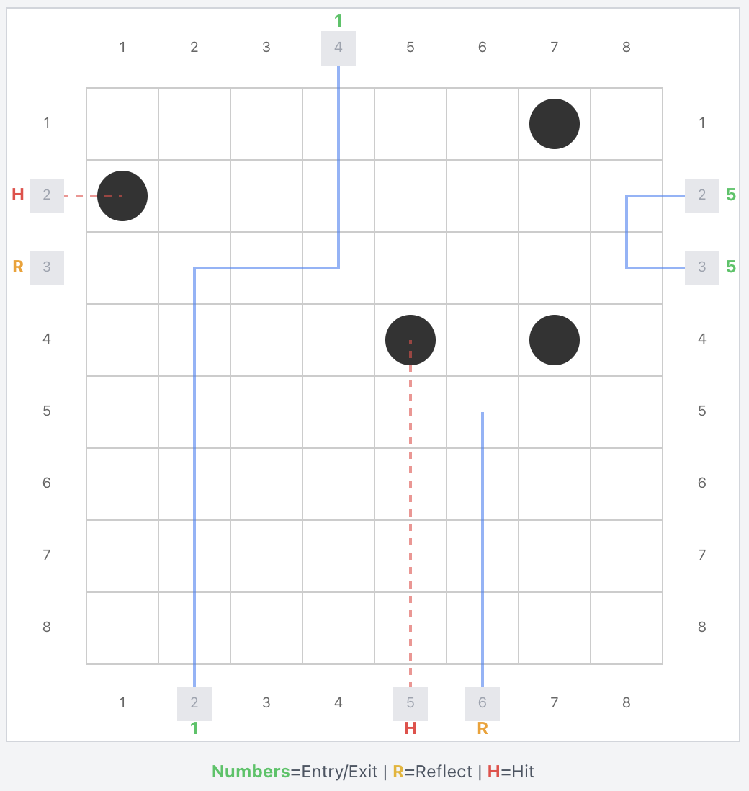
Screenshot placeholder — use React app Sandbox mode or hand-drawn diagram showing absorption, deflection, and reflection examples on an 8×8 grid.
Key advantage: Every game instance is a unique, out-of-distribution problem with known ground truth and quantifiable optimal solutions.
Ray strikes an atom directly and is absorbed.
No exit position recorded.
Atom diagonally adjacent to entry point causes ray to reverse.
Ray exits where it entered.
Single adjacent atom deflects ray 90° away from the atom.
Multiple deflections possible.
Complexity: Rays can interact with 0–4 atoms. Deflection chains create paths traversing many cells, making spatial tracking increasingly difficult.
| Cross-Mode Pattern | Implication |
|---|---|
| Good Predict + Poor Play | Non-spatial limitations (abduction, constraints, test selection) |
| Poor Predict + Poor Play | Spatial/world model partly responsible |
| Performance delta | Isolates inferential machinery contribution |
Switch to React app in browser
Factorial Design
| Factor | Levels |
|---|---|
| Model | Haiku 4.5, Sonnet 4.5, Sonnet 4.6, Opus 4.5, Opus 4.6 |
| Prompt | Baseline, Augmented |
| Thinking | Standard, Extended |
| VoT | None + 3 visualization prompts |
| Config | 10 fixed atom configurations |
Scale
VoT Conditions (Play only):
Information-theoretic strategy:
Optimal Solver Results
Mean rays to solve: 7.6
Range: 5–9
Mean score: 11.3
All 10 configs solved: TRUEThis establishes the ceiling of the performance corridor — the best any agent can achieve with perfect rationality and unlimited computation.
Random guessing (fire zero rays, guess 4 positions):
\[X \sim \text{Hypergeometric}(N=64,\; K=4,\; n=4)\]
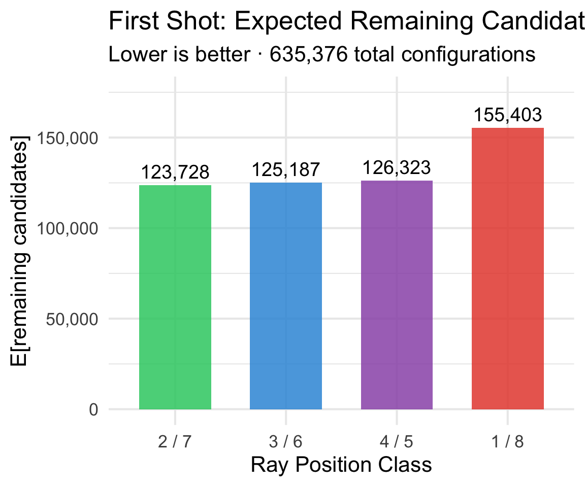
| Agent | E[Atoms] | E[Score] |
|---|---|---|
| Chance | 0.25 | 18.75 |
| LLMs | ? | ? |
| Optimal | 4.00 | 11.3 |
Any agent that extracts meaningful signal from ray observations should substantially exceed the chance baseline.
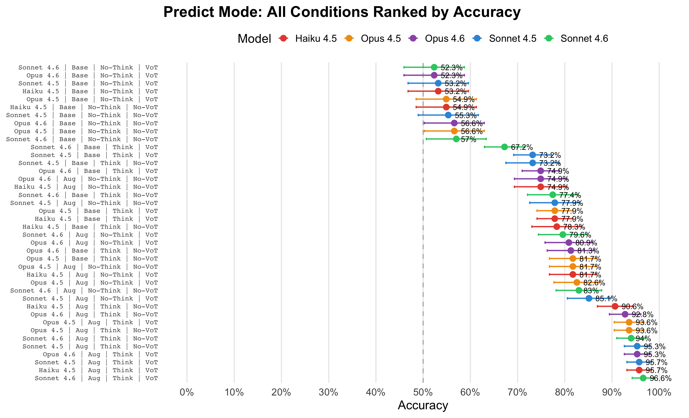
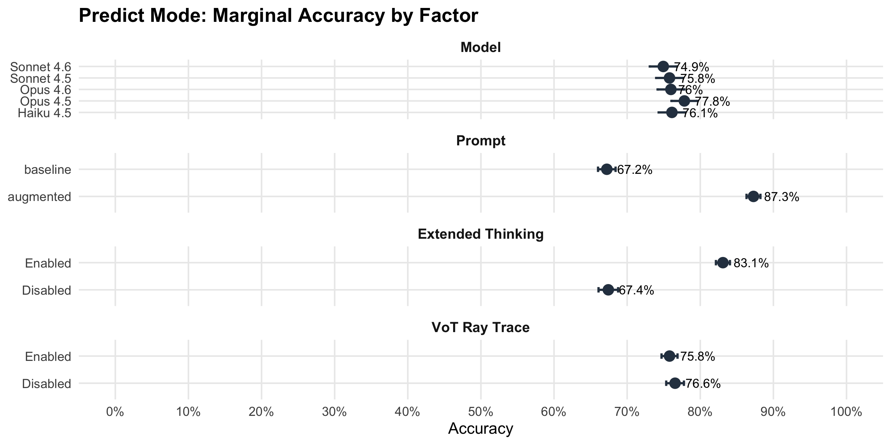
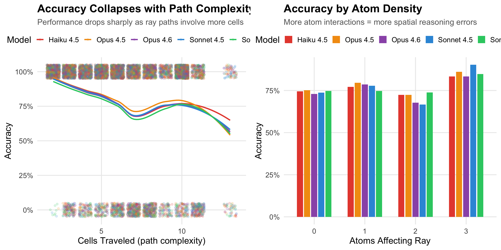
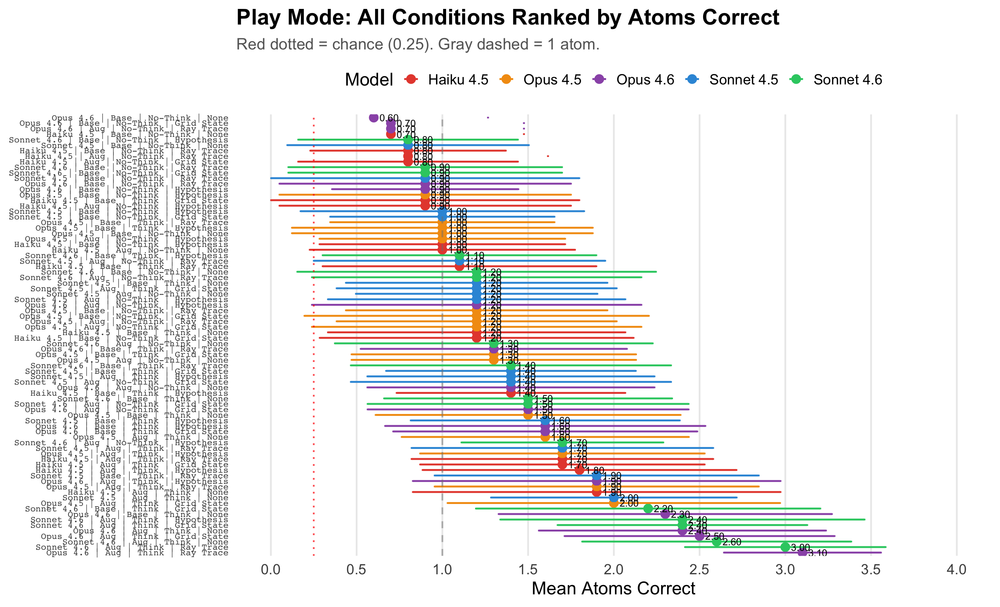
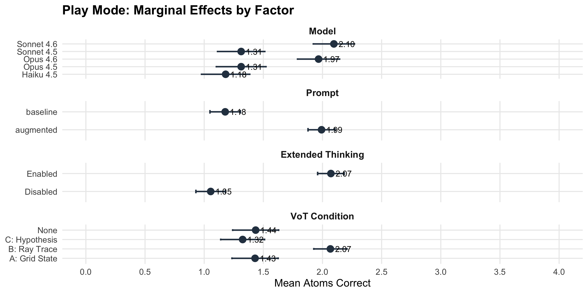
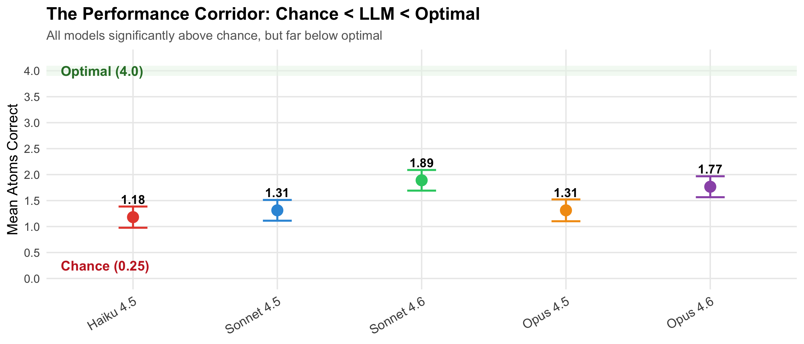
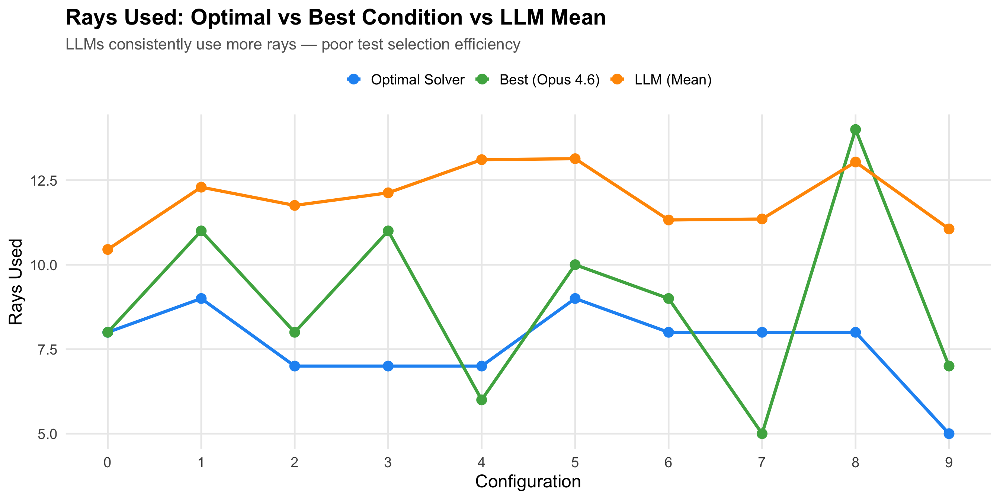
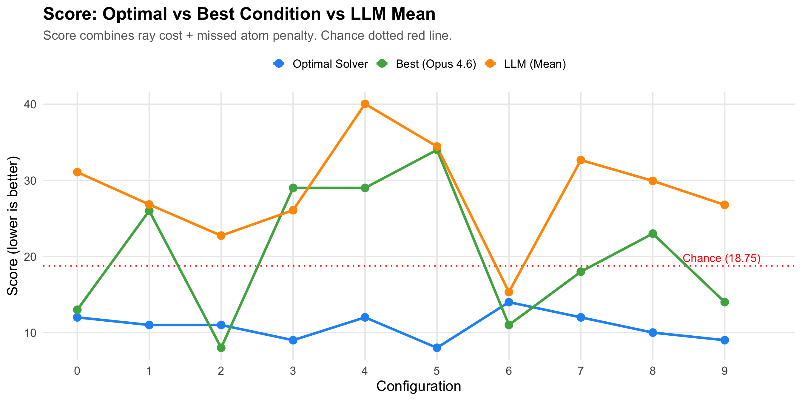
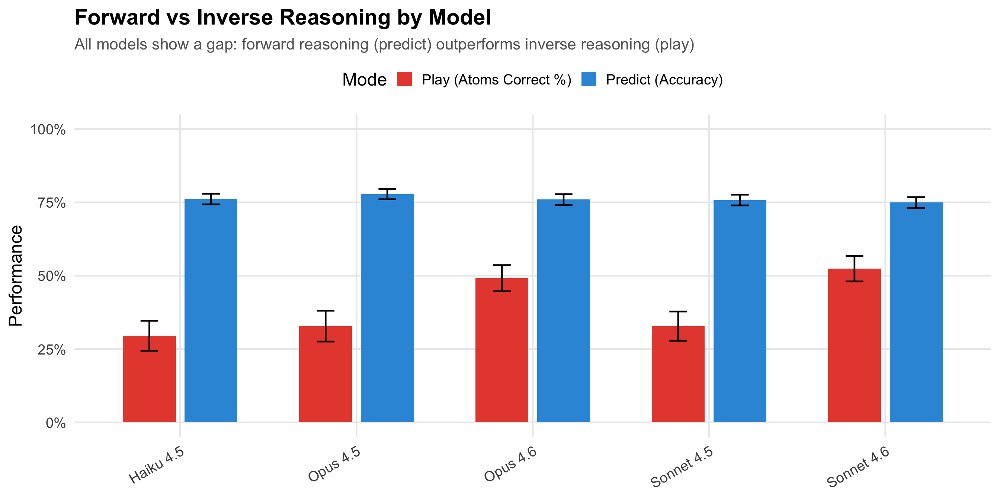
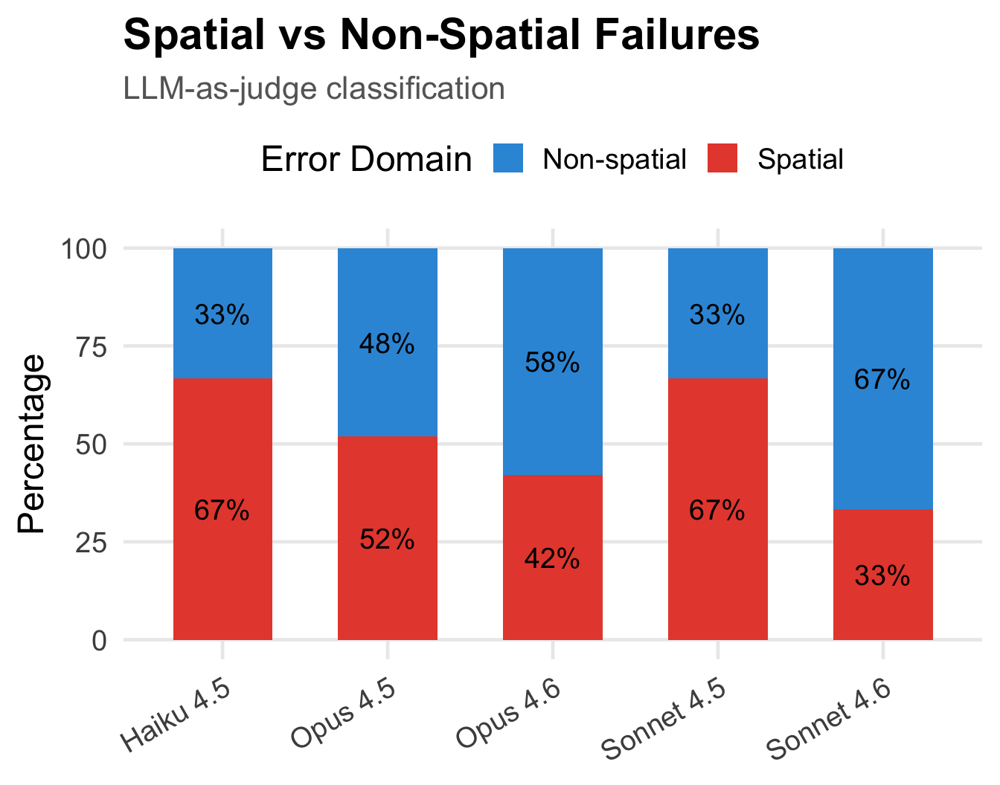
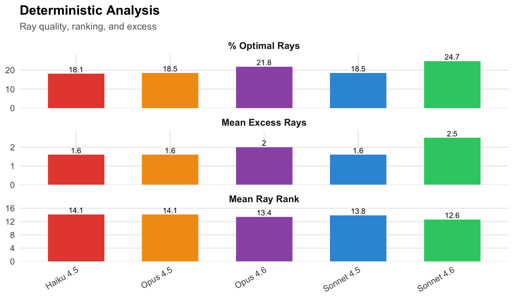
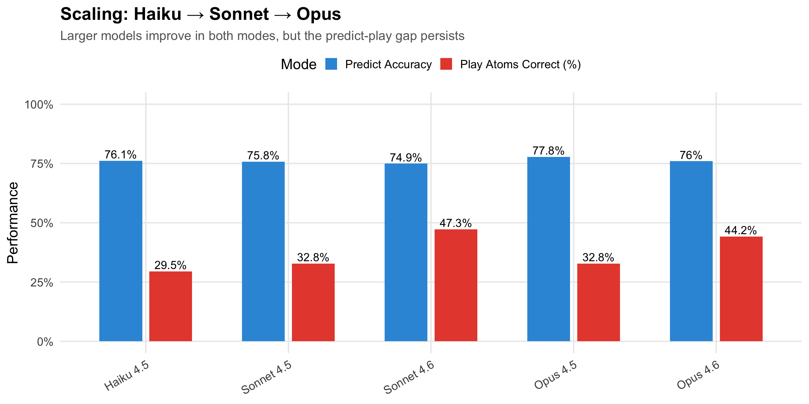
| Factor | Predict | Play | Interpretation |
|---|---|---|---|
| Model scale | ↑↑ | ↑↑ | Dominant factor in both modes |
| Augmented prompt | ↑ | ↑ | Consistent but modest benefit |
| Extended thinking | ↑ | — / ↑ | Helps predict; mixed in play |
| VoT: Grid State | — | — | Minimal effect |
| VoT: Ray Trace | — | — / ↓ | No help; sometimes hurts |
| VoT: Hypothesis | — | — | No consistent effect |
Key finding: No prompt intervention closes the gap to optimal. The limitations are architectural, not instructional.
How does Black Box compare to other reasoning benchmarks?
| Benchmark | Task Type | OOD? | Ceiling? | Decomposable? | Process? |
|---|---|---|---|---|---|
| ZebraLogic | Constraint satisfaction | Partial | No | No | No |
| ConstraintBench | Constraint satisfaction | Yes | No | No | No |
| BALROG | Game playing | Yes | No | Partial | Yes |
| PuzzlePlex | Puzzle solving | Yes | No | No | No |
| Black Box | Diagnostic reasoning | Yes | Yes | Yes | Yes |
Black Box is unique in providing an information-theoretic ceiling and partial decomposition into component processes via the two-mode design.
Models fail to maintain consistent evidence sets. Clinical risk: Contradicted diagnoses remain in differential.
Models fire redundant/uninformative rays. Clinical risk: Unnecessary tests, delayed diagnosis.
Larger models help but don’t solve the problem. Clinical risk: Upgrading models doesn’t fix reasoning gaps.
Good at prediction, poor at diagnosis. Clinical risk: Can explain findings but not generate differential.
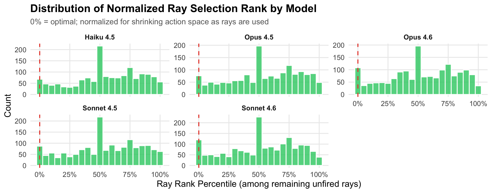
Clinical analog: Choosing which diagnostic test to order next. Models rarely pick the most informative option — analogous to ordering a comprehensive metabolic panel when a single targeted test would be more informative.
LLM-Modulo architecture: use tools for verification, not generation.
The hardest parts of diagnosis are generative, not computational.
Most AI evaluation asks “can it get the right answer?”
We should be asking “does it reason correctly to get there?”
LLMs perform above chance but far below optimal on diagnostic reasoning — extracting signal but failing at systematic evidence integration
The failures are in the process, not the knowledge — models know ray physics but can’t select informative tests, track constraints, or recognize when evidence is sufficient
Scaling and prompting help modestly — the diagnostic reasoning gap appears to be an architectural limitation, not an instructional one
Bottom Line
Before deploying LLMs for diagnostic tasks, we need benchmarks that test reasoning process, not just answer accuracy. Black Box demonstrates that the gap between “knows the domain” and “reasons within the domain” is substantial and persistent.
Todd R. Johnson
todd.r.johnson@uth.tmc.edu
University of Texas Health Science Center at Houston
Paper & Demo: github.com/toddjohnson/BBXReact
Happy to run additional live demos during Q&A